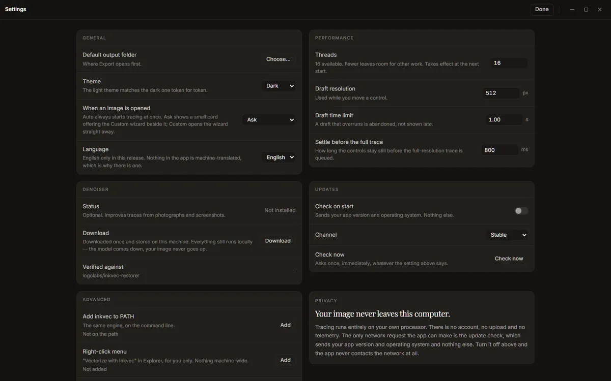

Settings
Settings in the app bar (or Ctrl+,, ⌘+, on a Mac) opens the preferences on one page. Changes apply as you make them; Done or Esc returns to where you were.

General
- Default output folder: where the export sheet starts. Without one, Export asks each time.
- Theme: System (follow the operating system), Dark or Light.
- When an image is opened: what the app offers besides Auto's trace, which always starts at once. Ask shows the choice card; Auto only shows nothing; Custom wizard opens the wizard straight away. See Getting started.
- Language: English only in this release.
Performance
- Threads: how many processor threads the tracer may use; fewer leaves room for other work. Takes effect the next time the app starts.
- Draft resolution (default 512 px): the size a draft is traced at, on its longer side, while you move a control.
- Draft time limit (default 0.4 s): a draft that takes longer is dropped rather than shown late.
- Settle before the full trace (default 800 ms): how long the controls must be still before the full trace starts.
On a slow computer, a lower draft resolution keeps the controls responsive; on a fast one, a higher one makes drafts closer to the final.
Denoiser
The denoiser is a trained model that repairs JPEG, WebP and screenshot damage before tracing, which usually halves the colour error on a photographed or screenshotted logo. It is optional and not included in the installer (it is about 80 MB).
- Status: Not installed, or Installed with its size.
- Download explains the download before anything is fetched: where it comes from (the
Logolabs/inkvec-denoiser-001repository on Hugging Face), what it adds to each trace (about 0.6 s), and that it is checked against its published SHA-256 when it arrives. Press Download to start. You can keep tracing while it downloads, and Cancel download really stops it. - Remove deletes it again.
- Verified against shows the repository and the start of the checksum.
The model runs on your computer like everything else: it comes down, your image never goes up.
Once it is installed, the command-line inkvec --restore uses the same file.
The Intel macOS build does not include the denoiser, and says Not in this build. The Windows, Linux and Apple-silicon macOS builds do.
In Studio Lite there is nothing to press. The denoiser (about 76 MB of weights and 26 MB of ONNX Runtime Web, the runtime that runs it in the browser) starts downloading in the background as soon as the page has loaded its engine, at low priority, and is kept in the browser's storage, so later visits start with it already there. While it downloads, the status strip at the bottom left shows how far it has got (Denoiser 34 of 102 MB · 33%) and then goes away. If you turn the denoiser On (or pick Auto, or a preset that uses it) before it has arrived, the trace you see is made without it for the moment, the Denoiser control shows the download (Downloading the denoiser, 34 of 102 MB, 33%, then Preparing the denoiser…), and the image is traced again with it, by itself, once it is ready. If the download fails, the control says why and offers Retry; a download that breaks off is also retried once by itself, from where it stopped.
The background download is skipped when your browser asks sites to save data (Chrome's and Edge's data saver, or a metered connection set to save data). Turning the denoiser on then downloads it, with the same progress. Remove clears the browser's copy. It only works on the Space's own tab (a page that is cross-origin isolated); inside the Hugging Face frame the control says needs its own tab, and nothing is downloaded there.
Updates
- Check on start (on): looks for a newer version when the app starts, sending your app version and operating system and nothing else. Off, the app never contacts the network (except for a denoiser download you ask for).
- Channel: Stable or Prerelease.
- Check now: asks once, whatever the setting above says. A newer version is announced in the status strip, with a link to what changed.
Advanced
Both entries here add something to your system for your user only: no administrator rights, nothing machine-wide. Each row shows whether it is in place and where, and Remove takes it back out.
Add inkvec to PATH puts the inkvec command, the same engine at the same version as the app,
where a terminal finds it:
| System | Where |
|---|---|
| Windows | a copy at %LOCALAPPDATA%\Microsoft\WindowsApps\inkvec.exe |
| macOS, Linux | a link at ~/.local/bin/inkvec |
On Windows, open a new terminal afterwards. On macOS and Linux, ~/.local/bin must be on your
PATH (it is on most Linux distributions; on macOS, add it if inkvec is not found). Being a
copy, the Windows command does not follow app updates: after installing a new version, press
Remove and Add again.
Right-click menu adds Vectorize with Inkvec to the file manager's menu for PNG, JPEG, WebP, BMP and TIFF files. Choosing it opens the image in the Studio (in the window already open, if there is one).
| System | What is added |
|---|---|
| Windows | A per-user entry in the registry, under HKEY_CURRENT_USER\Software\Classes\SystemFileAssociations. On Windows 11 it is under Show more options. |
| Linux | A desktop entry, ~/.local/share/applications/inkvec-studio-vectorize.desktop; it appears under Open With in most file managers. |
| macOS | Nothing to add: Finder already offers Inkvec Studio under Open With. |
On Windows, uninstalling the app also removes both entries.
Reset settings puts every preference, the trace controls and the remembered choices (see below) back to their defaults and clears the recent files. Your saved presets are kept (forget one from the preset tray), nothing you have traced or exported is touched, the denoiser stays installed, and the window stays where it is.
What the app remembers
Besides the settings on this screen, the app remembers how you left it, and opens that way next time: the trace controls and the selected preset, the Denoiser and Editable switches, the tab you were on, the half of the rail (Result or Tune) and which Tune groups were open, the viewer's arrangement (Side by side, Wipe, A/B), its layers (Fill, Wireframe, Anchors, Handles, Certainty) and Detail, the formats and sizes ticked in the export sheet, the Minify tab's controls and backdrop, the Fabricate tab's settings (without the colours of one drawing), the Batch tab's switches, and, on the desktop, the window's size and position (on a monitor that is no longer connected, it opens centred instead). There is no save button: a change is kept about half a second after you make it.
What belongs to one image is not kept: its colour groups, snapped colours, and the zoom and pan. They start fresh with the next image.
Privacy
The last card says what the rest of this guide says too: tracing runs on your own processor, there is no account, no upload and no telemetry, and the update check is the only request the app makes on its own.
Where things are kept
| What | Windows | macOS | Linux |
|---|---|---|---|
| Preferences, remembered choices, recent files, saved presets | %APPDATA%\inkvec-studio\preferences.json |
~/Library/Application Support/inkvec-studio/preferences.json |
~/.config/inkvec-studio/preferences.json |
| The denoiser model | %LOCALAPPDATA%\inkvec\models\restorer.onnx |
~/.cache/inkvec/models/restorer.onnx |
~/.cache/inkvec/models/restorer.onnx |
About
About shows the app's version, the engine's version and the build target, links to the user guide, the source and the online demo, the compute acknowledgement for the denoiser's training, and the licence and third-party notices (Open shows them in full).
Studio Lite
Studio Lite keeps its preferences, remembered choices and saved presets in the browser's local storage for the Space's site, and the denoiser in its Cache Storage; clearing the site's data in the browser removes both. In a private window, or with site data blocked, nothing can be kept: the app works the same and starts from the defaults each time. It has no Advanced entries (no command on the PATH, no right-click menu) and no default output folder, since files are downloaded.